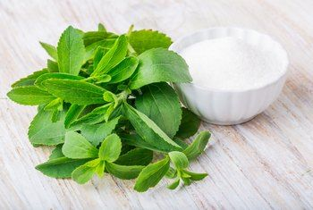
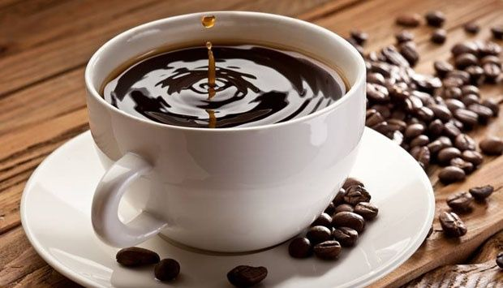
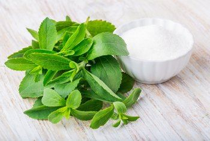
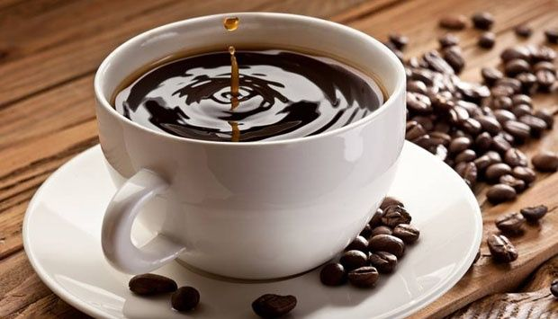

Tentang Kami
Kovia Coffee Dip lahir pada awal 2025 dari keinginan tim pecinta kopi untuk menghadirkan kopi hitam celup rendah kalori dengan pemanis stevia, sebagai alternatif sehat tanpa mengorbankan cita rasa kopi tradisional Indonesia. Setelah riset sederhana menunjukkan tingginya minat masyarakat akan kopi sehat, Kovia berkomitmen menjadi pelopor kopi celup rendah kalori dan simbol gaya hidup sehat bagi penikmat kopi di Indonesia.
 


